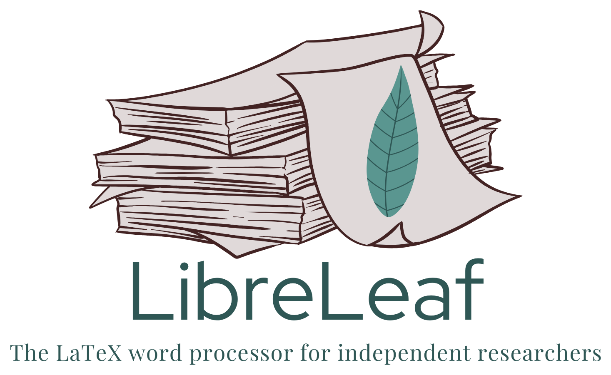
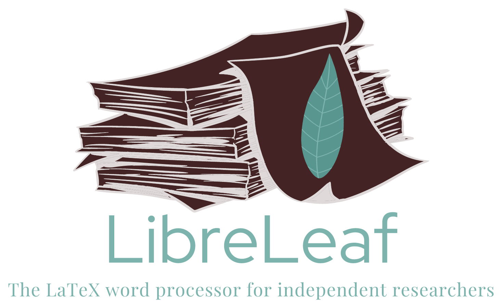
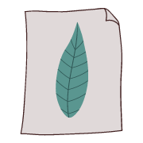
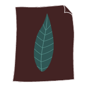

Four brand colours from the logo, one extra teal for dark mode, and four status colours. Light mode sets Walnut ink on Mist paper; dark mode swaps them. Every pairing used for text below passes WCAG AA.
Click a hex code to copy it.
Taken from the second palette. The source colours fail on one background or the other, so each mode uses a darker or lighter shade of the same hue. Every message carries an icon and a word, because the success teal is nearly the same as the brand teal.
\end{figure} is missing.#BF092F\end{figure} is missing.#F08A9CGoogle Docs-style page with a Word-style ribbon. The paper stays light in dark mode so it matches the PDF.
\begin{equation} · Ctrl+Shift+E\begin{equation} · Ctrl+Shift+EThe example paper is sample text. Red wavy underline = compile error; amber dotted underline = health-check warning.
The LaTeX word processor for independent researchers
Insert · References · Layout · Review · Publish
The paper and leaf on their own. The light version has Mist paper, for light tab bars. The dark version has Walnut paper with a Mist outline, for dark tab bars. The browser picks one to match its own theme.

Light tab bar
Dark tab bar<link rel="icon" href="/favicon-light.svg" type="image/svg+xml" media="(prefers-color-scheme: light)"> <link rel="icon" href="/favicon-dark.svg" type="image/svg+xml" media="(prefers-color-scheme: dark)"> <link rel="icon" href="/favicon-light.ico" sizes="16x16 32x32 48x48"> <link rel="apple-touch-icon" href="/favicon-light-180.png">
WCAG 2.2. AA needs 4.5:1 for body text and 3:1 for large text and icons.
| Sample | Pair | Ratio | Use |
|---|---|---|---|
| Aa | Walnut on Mist | 10.04 | ✓ Body text, both modes |
| Aa | Walnut on paper | 12.77 | ✓ Document text |
| Aa | Deep teal on Mist | 5.77 | ✓ Light-mode links |
| Aa | Mist on Deep teal | 5.77 | ✓ Button text |
| Aa | Sage light on Walnut | 5.94 | ✓ Dark-mode links |
| Aa | Sage teal on Walnut | 4.12 | △ Large text and icons only |
| Aa | Sage teal on Mist | 2.43 | ✕ Fills only |
| Aa | Deep teal on Walnut | 1.74 | ✕ Surfaces only |
| Aa | Crimson on Mist | 4.58 | ✓ Light-mode errors |
| Aa | Crimson on Walnut | 2.19 | ✕ Use #F08A9C (5.87) |
:root {
--canvas: #E0D9D9; --page: #F7F4F4; --surface: #EEE9E9;
--text: #432323; --primary: #2F5755; --on-primary: #E0D9D9;
--accent: #2F5755; --accent-subtle: rgb(90 150 144 / .22);
--error: #BF092F; --warning: #844C00; --success: #1F6363; --info: #16476A;
}
.dark {
--canvas: #432323; --page: #F7F4F4; --surface: #523030;
--text: #E0D9D9; --primary: #2F5755; --on-primary: #E0D9D9;
--accent: #7DB3AD; --accent-subtle: #2F5755;
--error: #F08A9C; --warning: #E0A030; --success: #5FBDBD; --info: #8DBBE0;
}